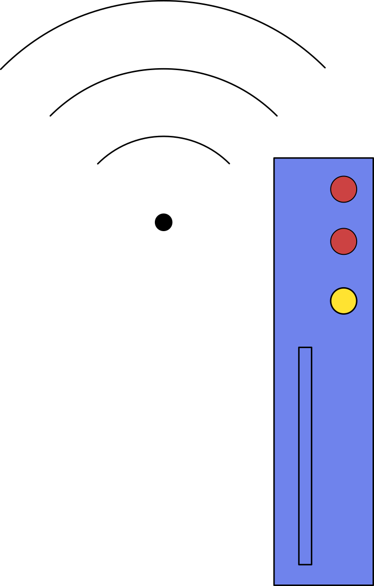
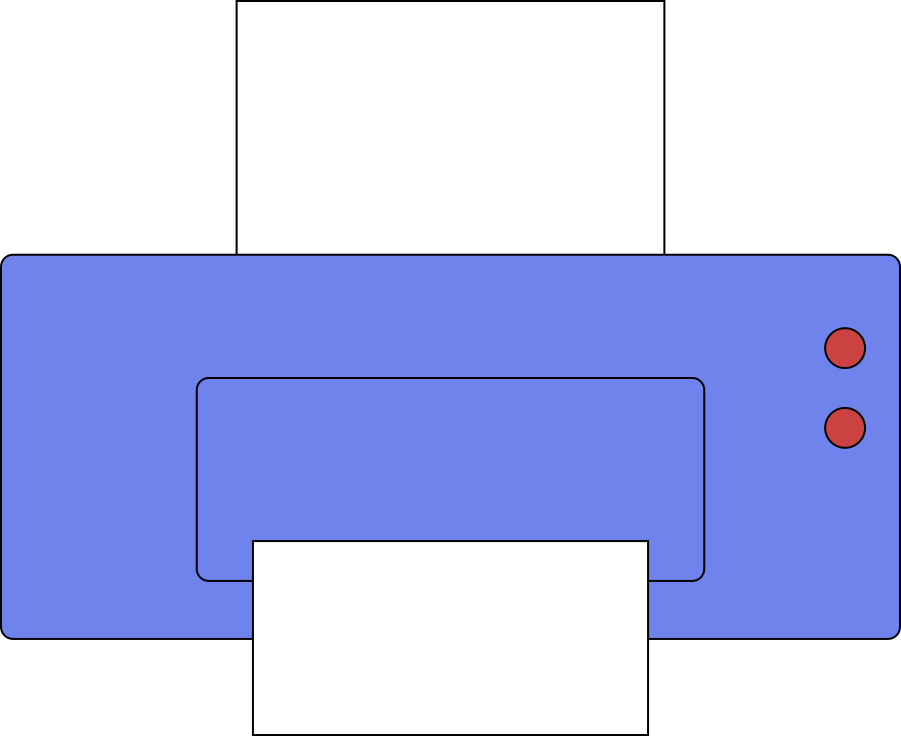
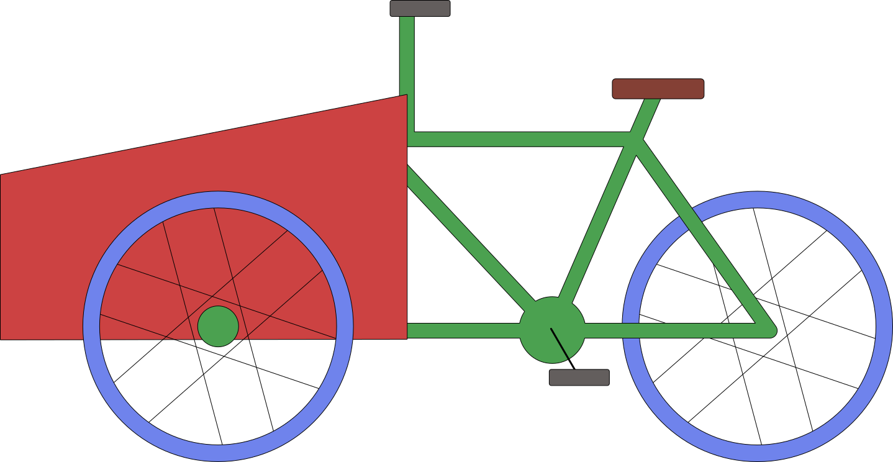

Les solutions d’éco-conception peuvent être classées suivant 4 différents niveaux : selon le niveau de difficulté à les mettre en place et leurs impacts positifs sur l’environnement. Dans cette activité, nous vous proposons des exemples d’éco-conception à analyser et classer par niveaux d’éco-conception.
Passer d’une bouteille de lessive liquide de 1 L à une bouteille de lessive 2 fois plus concentrée entraîne :
réponse a : passer à une lessive 2 fois plus concentrée demande d’adapter sa composition pour augmenter sa concentration, tout en conservant des propriétés physiques qui lui permettent de s’écouler facilement.
réponse b : on peut ainsi diminuer la quantité de packaging pour un même nombre de lessives réalisées : en théorie, 1 L de lessive permettra de faire 2 fois plus de lessives, tout en gardant un packaging de bouteille d’1 L.
réponse c : une innovation technologique pourrait potentiellement être nécessaire (par exemple l’ajout d’un additif pour faciliter l’écoulement de la lessive concentrée). Sans information supplémentaire, cette réponse n’est ni vraie ni fausse.
réponse d : le modèle d’affaire reste le même : vendre de la lessive en bouteille.

La société X a décidé d’éco-concevoir sa box internet, dont 80 % des impacts viennent de la phase d’utilisation, en rajoutant un mode veille et un bouton on/off en cas d’absence prolongée. Ces solutions entraînent :
réponse a : l’ajout d’un mode veille et d’un bouton on/off a pour objectif de diminuer la consommation d’énergie lors de l’utilisation de la box.
réponse b : pour accueillir ces évolutions, la structure de la box devra être adaptée.
réponse c : on pourrait aussi intégrer de nouvelles technologies de composants électroniques permettant de consommer encore moins, mais en l’absence d’information supplémentaire, cette réponse n’est ni vraie ni fausse.

La société Xerox ne vend plus d’imprimantes directement, mais les loue à ses clients et en assure la maintenance. Cette éco-conception entraîne :
réponse c : il s’agit bien ici d’un changement de modèle d’affaire : la société Xerox reste propriétaire de ses imprimantes et en garde la responsabilité (maintenance, réparation, fin de vie).

Une société de livraison a décidé de convertir la motorisation diesel de ses vieux camions en motorisation électrique à batterie (on parle de rétrofit). Cette éco-conception entraîne :
réponse a : il faudra modifier en profondeur le camion, tout en conservant son châssis et sa cabine.
réponse b : sa chaîne de traction thermique est retirée et remplacée par une chaîne électrique, avec l’ajout d’une batterie.
réponse c : il ne s’agit pas d’un changement de modèle d’affaire : la société de livraison continue à livrer en camionnette.

Un producteur de fibre textile a investi dans une nouvelle machine de filature, électrique, plus efficace énergétiquement et permettant de limiter les rebuts de production. Cette éco-conception entraîne :
réponse a : le producteur a acheté une nouvelle machine de filature, qui lui permet d’optimiser sa production, de réduire sa consommation énergétique et ses déchets.
réponses b et c : la composition de sa fibre et son modèle d’affaire restent identiques.
Le tableau répertorie les 4 grands niveaux d’éco-conception. Ces niveaux sont classés par :
niveau de difficulté (axe horizontal) : plus le niveau augmente, plus la solution d’éco-conception à mettre en place est complexe, demande du temps et de l’investissement (humain et financier).
niveau de bénéfice environnemental (axe vertical) : plus le niveau augmente, plus la solution d’éco-conception permet de réduire fortement l’impact environnemental.
nouvelle machine de filatureOn change la façon de vendre et d’utiliser, pas juste le produit.
On change la technologie pour un impact radicalement différent. On investit dans de nouveaux procédés de production ou dans de nouvelles technologies.
On repense la conception pour mieux maîtriser le cycle de vie. On modifie la structure et la composition du produit.
On optimise l’existant sans changer la structure du produit. On améliore les rendements, les consommations d’énergie, on diminue les déchets et les émissions directes, on allège…
La production optimisée de fibre textile, avec l’achat d’une nouvelle machine de filature plus performante, économe en énergie et en rebuts de production, est un niveau 1 d’éco-conception : ici, on optimise l’existant.
La lessive concentrée ainsi que la box nécessitent un changement de composition (pour la lessive) et de structure (pour la box) : il s’agit donc d’un niveau 2.
Le rétrofit permet de basculer d’une technologie thermique à une technologie électrique, et correspond donc au niveau 3.
Enfin, le passage d’un modèle d’affaire où l’imprimante est vendue au client à un modèle où le producteur reste propriétaire et loue ses imprimantes correspond bien à un niveau 4 d’éco-conception.